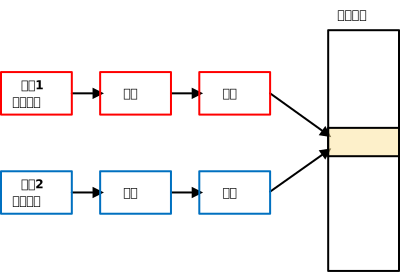
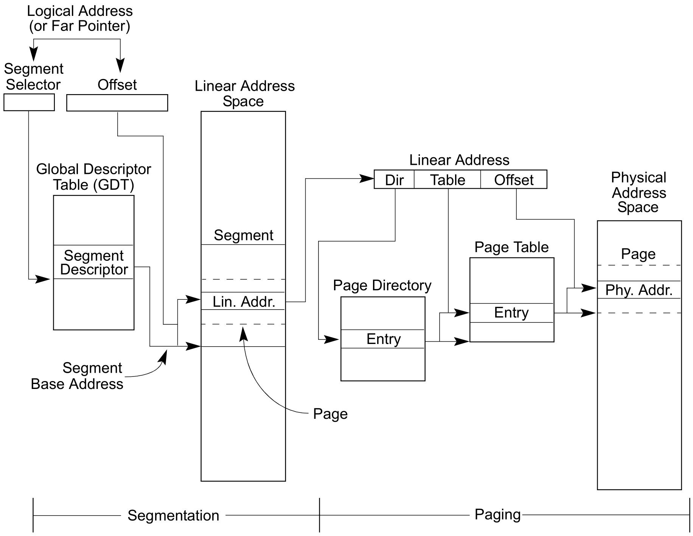
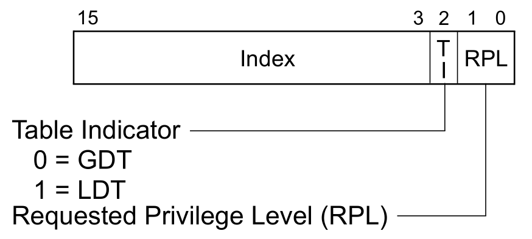
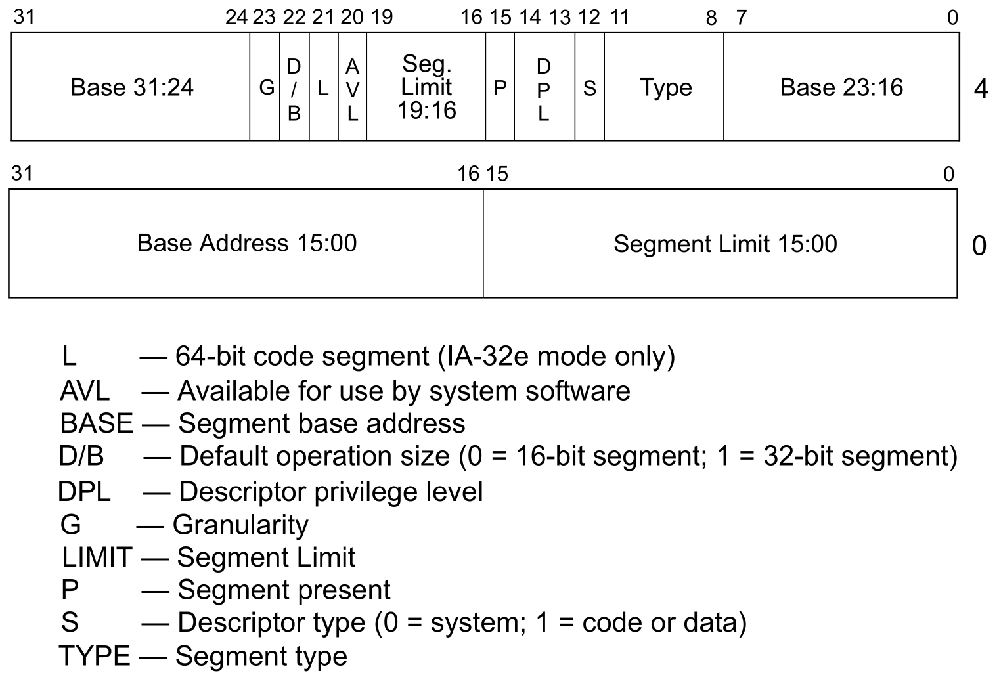
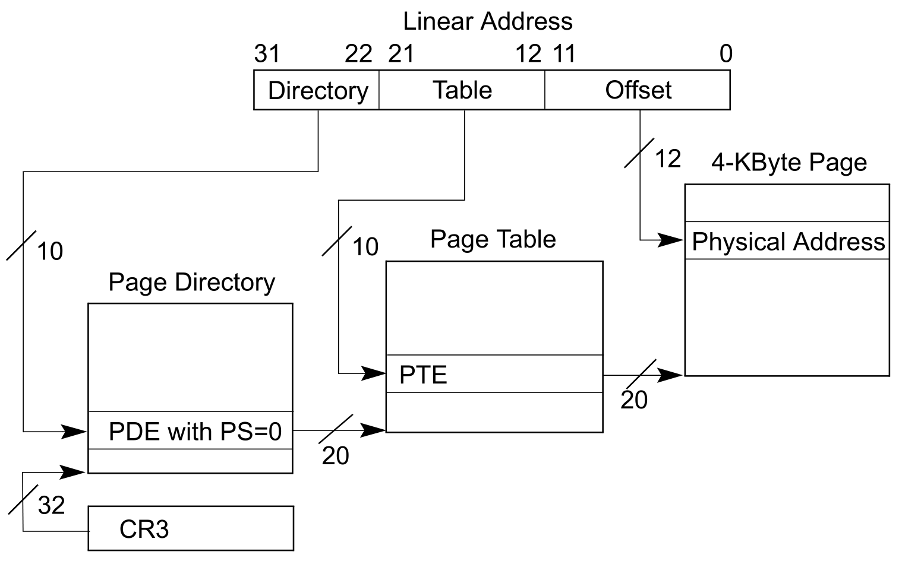
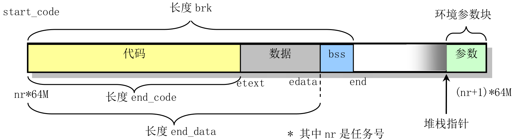

7. 地址映射与共享¶
7.1. 实验目的¶
深入理解操作系统的段、页式内存管理，深入理解段表、页表、逻辑地址、线性地址、物理地址等概念；
实践段、页式内存管理的地址映射过程；
编程实现段、页式内存管理上的内存共享，从而深入理解操作系统的内存管理。
7.2. 实验内容¶
本次实验的基本内容是：
用
Bochs调试工具跟踪Linux 0.11的地址翻译（地址映射）过程，了解IA-32和Linux 0.11的内存管理机制；在
Ubuntu上编写多进程的生产者-消费者程序，用共享内存做缓冲区；在信号量实验的基础上，为
Linux 0.11增加共享内存功能，并将生产者-消费者程序移植到Linux 0.11。
7.2.1. 跟踪地址翻译过程¶
首先以汇编级调试的方式启动 bochs ，引导 Linux 0.11 ，并在其下编译和运行 test.c 。
它是一个无限循环的程序，永远不会主动退出。
然后在调试器中通过查看各项系统参数，从逻辑地址、 LDT 表、 GDT 表、线性地址到页表，计算出变量 i 的物理地址。
最后通过直接修改物理内存的方式让 test.c 退出运行。 test.c 的代码如下：
#include <stdio.h>
int i = 0x12345678;
int main(void)
{
printf("The logical/virtual address of i is 0x%08x", &i);
fflush(stdout);
while (i)
;
return 0;
}
7.2.2. 基于共享内存的生产者—消费者程序¶
本项实验在 Ubuntu 下完成，与信号量实验中的 pc.c 的功能要求基本一致，仅有两点不同：
不用文件做缓冲区，而是使用共享内存；
生产者和消费者分别是不同的程序。生产者是
producer.c，消费者是consumer.c。两个程序都是单进程的，通过信号量和缓冲区进行通信。
Linux 下，可以通过 shmget() 和 shmat() 两个系统调用使用共享内存。
7.2.3. 共享内存的实现¶
进程之间可以通过页共享进行通信，被共享的页叫做共享内存，结构如下图所示：

图1. 共享内存

图2. 段页式
本部分实验内容是在 Linux 0.11 上实现上述页面共享，并将上一部分实现的 producer.c 和 consumer.c 移植过来，验证页面共享的有效性。
具体要求在 mm/shm.c 中实现 shmget() 和 shmat() 两个系统调用。它们能支持 producer.c 和 consumer.c 的运行即可，不需要完整地实现 POSIX 所规定的功能。
7.2.4. shmget()¶
int shmget(key_t key, size_t size, int shmflg);
shmget() 会新建/打开一页内存，并返回该页共享内存的 shmid （该块共享内存在操作系统内部的 id ）。
所有使用同一块共享内存的进程都要使用相同的 key 参数。
如果 key 所对应的共享内存已经建立，则直接返回 shmid 。
如果 size 超过一页内存的大小，返回 -1 ，并置 errno 为 EINVAL 。
如果系统无空闲内存，返回 -1 ，并置 errno 为 ENOMEM 。 shmflg 参数可忽略。
7.2.5. shmat()¶
void *shmat(int shmid, const void *shmaddr, int shmflg);
shmat() 会将 shmid 指定的共享页面映射到当前进程的虚拟地址空间中，并将其首地址返回。
如果 shmid 非法，返回 -1 ，并置 errno 为 EINVAL 。 shmaddr 和 shmflg 参数可忽略。
7.3. 实验报告¶
完成实验后，在实验报告中回答如下问题：
对于地址映射实验部分，列出你认为最重要的那几步（不超过
4步），并给出你获得的实验数据。test.c退出后，如果马上再运行一次，并再进行地址跟踪，你发现有哪些异同？为什么？
7.3.1. 评分标准¶
跟踪地址映射的过程，20%
shmget()，10%shmat()，10%producer.c，15%consumer.c，15%实验报告，30%
7.4. 实验提示¶
《注释》中的 5.3 节和第 13 章对 Linux 0.11 的内存管理有详细分析、讲解，很值得一看。
IA-32 的地址翻译过程
Linux 0.11完全遵循IA-32（Intel Architecture 32-bit）架构进行地址翻译，Windows、后续版本的Linux以及一切在IA-32保护模式下运行的操作系统都遵循此架构。
因为只有这样才能充分发挥 CPU 的 MMU 的功能。
关于此地址翻译过程的细节，请参考《注释》一书中的 5.3.1-5.3.4 节。
用 Bochs 汇编级调试功能进行人工地址翻译
此过程比较机械，基本不消耗脑细胞，做一下有很多好处。
7.4.1. 准备¶
编译好 Linux 0.11 后，首先通过运行 ./run 启动调试器，此时 Bochs 的窗口处于黑屏状态，而命令行窗口显示：
========================================================================
Bochs x86 Emulator 2.6
Built from SVN snapshot on September 2nd, 2012
========================================================================
Next at t=0
(0) [0x00000000fffffff0] f000:fff0 (unk. ctxt): jmp far f000:e05b ; ea5be000f0
<bochs:1>_
Next at t=0 表示下面的指令是 Bochs 启动后要执行的第一条软件指令。单步跟踪进去就能看到 BIOS 的代码。不过这不是本实验需要的。直接输入命令 c ， continue 程序的运行， Bochs 一如既往地启动了 Linux 0.11 。
在 Linux 0.11 下输入（或拷入） test.c ，编译为 test ，运行之，打印如下信息：
The logical/virtual address of i is 0x00003004
只要 test 不变， 0x00003004 这个值在任何人的机器上都是一样的。即使在同一个机器上多次运行 test ，也是一样的。
test 是一个死循环，只会不停占用 CPU ，不会退出。
7.4.2. 暂停¶
当 test 运行的时候，在命令行窗口按 Ctrl+c ， Bochs``会暂停运行，进入调试状态。绝大多数情况下都会停在 ``test 内，显示类似如下信息：
(0) [0x00fc8031] 000f:00000031 (unk. ctxt): cmp dword ptr ds:0x3004, 0x00000000 ; 833d0430000000
其中加粗的 000f 如果是 0008 ，则说明中断在了内核里。那么就要 c ，然后再 Ctrl+c ，直到变为 000f 为止。如果显示的下一条指令不是 cmp ... ，就用 n 命令单步运行几步，直到停在 cmp ... 。
使用命令 u /7 ，显示从当前位置开始 7 条指令的反汇编代码，如下：
10000031: ( ): cmp dword ptr ds:0x3004, 0x00000000 ; 833d0430000000
10000038: ( ): jz .+0x00000002 ; 7402
1000003a: ( ): jmp .+0xfffffff5 ; ebf5
1000003c: ( ): xor eax, eax ; 31c0
1000003e: ( ): jmp .+0x00000000 ; eb00
10000040: ( ): leave ; c9
10000041: ( ): ret ; c3
这就是 test.c 中从 while 开始一直到 return 的汇编代码。变量 i 保存在 ds:0x3004 这个地址，并不停地和 0 进行比较，直到它为 0 ，才会跳出循环。
现在，开始寻找 ds:0x3004 对应的物理地址。
7.4.3. 段表¶
ds:0x3004 是虚拟地址， ds 表明这个地址属于 ds 段。首先要找到段表，然后通过 ds 的值在段表中找到 ds 段的具体信息，才能继续进行地址翻译。每个在 IA-32 上运行的应用程序都有一个段表，叫 LDT ，段的信息叫段描述符。
LDT 在哪里呢？ ldtr 寄存器是线索的起点，通过它可以在 GDT （全局描述符表）中找到 LDT 的物理地址。
用 sreg 命令：
cs:s=0x000f, dl=0x00000002, dh=0x10c0fa00, valid=1
ds:s=0x0017, dl=0x00003fff, dh=0x10c0f300, valid=3
ss:s=0x0017, dl=0x00003fff, dh=0x10c0f300, valid=1
es:s=0x0017, dl=0x00003fff, dh=0x10c0f300, valid=1
fs:s=0x0017, dl=0x00003fff, dh=0x10c0f300, valid=1
gs:s=0x0017, dl=0x00003fff, dh=0x10c0f300, valid=1
ldtr:s=0x0068, dl=0xc2d00068, dh=0x000082f9, valid=1
tr:s=0x0060, dl=0x52e80068, dh=0x00008bfd, valid=1
gdtr:base=0x00005cc8, limit=0x7ff
idtr:base=0x000054c8, limit=0x7ff
可以看到 ldtr 的值是 0x0068=0000000001101000 （二进制），表示 LDT 表存放在 GDT 表的 1101(二进制)=13（十进制） 号位置（每位数据的意义参考后文叙述的段选择子）。而 GDT 的位置已经由 gdtr 明确给出，在物理地址的 0x00005cc8 。
用 xp /32w 0x00005cc8 查看从该地址开始， 32 个字的内容，及 GDT 表的前 16 项，如下：
0x00005cc8 : 0x00000000 0x00000000 0x00000fff 0x00c09a00
0x00005cd8 : 0x00000fff 0x00c09300 0x00000000 0x00000000
0x00005ce8 : 0xa4280068 0x00008901 0xa4100068 0x00008201
0x00005cf8 : 0xf2e80068 0x000089ff 0xf2d00068 0x000082ff
0x00005d08 : 0xd2e80068 0x000089ff 0xd2d00068 0x000082ff
0x00005d18 : 0x12e80068 0x000089fc 0x12d00068 0x000082fc
0x00005d28 : 0xc2e80068 0x00008bf9 0xc2d00068 0x000082f9
0x00005d38 : 0x00000000 0x00000000 0x00000000 0x00000000
GDT 表中的每一项占 64 位（ 8 个字节），所以我们要查找的项的地址是
0x00005cc8 + 13 *8 。
xp /2w 0x00005cc8 + 13* 8 ，得到：
0x00005d30 : 0xc2d00068 0x000082f9
上两步看到的数值可能和这里给出的示例不一致，这是很正常的。如果想确认是否准确，就看 sreg 输出中， ldtr 所在行里， dl 和 dh 的值，它们是 Bochs 的调试器自动计算出的，你寻找到的必须和它们一致。
0xc2d00068 0x000082f9 将其中的加粗数字组合为 0x00f9c2d0，这就是 LDT 表的物理地址（为什么这么组合，参考后文介绍的段描述符）。
xp /8w 0x00f9c2d0 ，得到：
0x00f9c2d0 : 0x00000000 0x00000000 0x00000002 0x10c0fa00
0x00f9c2e0 : 0x00003fff 0x10c0f300 0x00000000 0x00f9d000
这就是 LDT 表的前 4 项内容了。
7.4.4. 段描述符¶
在保护模式下，段寄存器有另一个名字，叫段选择子，因为它保存的信息主要是该段在段表里索引值，用这个索引值可以从段表中“选择”出相应的段描述符。
先看看 ds 选择子的内容，还是用 sreg 命令：
cs:s=0x000f, dl=0x00000002, dh=0x10c0fa00, valid=1
ds:s=0x0017, dl=0x00003fff, dh=0x10c0f300, valid=3
ss:s=0x0017, dl=0x00003fff, dh=0x10c0f300, valid=1
es:s=0x0017, dl=0x00003fff, dh=0x10c0f300, valid=1
fs:s=0x0017, dl=0x00003fff, dh=0x10c0f300, valid=1
gs:s=0x0017, dl=0x00003fff, dh=0x10c0f300, valid=1
ldtr:s=0x0068, dl=0x52d00068, dh=0x000082fd, valid=1
tr:s=0x0060, dl=0x52e80068, dh=0x00008bfd, valid=1
gdtr:base=0x00005cc8, limit=0x7ff
idtr:base=0x000054c8, limit=0x7ff
可以看到， ds 的值是 0x0017 。段选择子是一个 16 位寄存器，它各位的含义如下图：

图3. 段选择子
其中 RPL 是请求特权级，当访问一个段时，处理器要检查 RPL 和 CPL （放在 cs 的位 0 和位 1 中，用来表示当前代码的特权级），即使程序有足够的特权级（ CPL ）来访问一个段，但如果 RPL （如放在 ds 中，表示请求数据段）的特权级不足，则仍然不能访问，即如果 RPL 的数值大于 CPL （数值越大，权限越小），则用 RPL 的值覆盖 CPL 的值。而段选择子中的 TI 是表指示标记，如果 TI=0 ，则表示段描述符（段的详细信息）在 GDT （全局描述符表）中，即去 GDT 中去查；而 TI=1 ，则去 LDT （局部描述符表）中去查。
看看上面的 ds ， 0x0017=0000000000010111 （二进制），所以 RPL=11 ，可见是在最低的特权级（因为在应用程序中执行）， TI=1 ，表示查找 LDT 表，索引值为 10（二进制）= 2（十进制） ，表示找 LDT 表中的第 3 个段描述符（从 0 开始编号）。
LDT 和 GDT 的结构一样，每项占 8 个字节。所以第 3 项 0x00003fff 0x10c0f300 就是搜寻好久的 ds 的段描述符了。用 sreg 输出中 ds 所在行的 dl 和 dh 值可以验证找到的描述符是否正确。
接下来看看段描述符里面放置的是什么内容：

图4. 段描述符
可以看到，段描述符是一个 64 位二进制的数，存放了段基址和段限长等重要的数据。其中位 P （Present）是段是否存在的标记；位 S 用来表示是系统段描述符（ S=0 ）还是代码或数据段描述符（ S=1 ）；四位 TYPE 用来表示段的类型，如数据段、代码段、可读、可写等； DPL 是段的权限，和 CPL 、 RPL 对应使用；位 G 是粒度， G=0 表示段限长以位为单位， G=1 表示段限长以 4KB 为单位；其他内容就不详细解释了。
7.4.5. 段基址和线性地址¶
费了很大的劲，实际上我们需要的只有段基址一项数据，即段描述符 0x00003fff 0x10c0f300 中加粗部分组合成的 0x10000000 。这就是ds段在线性地址空间中的起始地址。用同样的方法也可以算算其它段的基址，都是这个数。
段基址+段内偏移 ，就是 线性地址 了。所以 ds:0x3004 的线性地址就是：
0x10000000 + 0x3004 = 0x10003004
用 calc ds:0x3004 命令可以验证这个结果。
7.4.6. 页表¶
从线性地址计算物理地址，需要查找页表。线性地址变成物理地址的过程如下：

图5. 线性地址变成物理地址
首先需要算出线性地址中的页目录号、页表号和页内偏移，它们分别对应了 32 位线性地址的 10位+10位+12位 ，所以 0x10003004 的页目录号是 64 ，页号 3 ，页内偏移是 4 。
IA-32 下，页目录表的位置由 CR3 寄存器指引。 creg 命令可以看到：
CR0=0x8000001b: PG cd nw ac wp ne ET TS em MP PE
CR2=page fault laddr=0x10002f68
CR3=0x00000000
PCD=page-level cache disable=0
PWT=page-level writes transparent=0
CR4=0x00000000: osxmmexcpt osfxsr pce pge mce pae pse de tsd pvi vme
说明页目录表的基址为 0 。看看其内容， xp /68w 0 ：
0x00000000 : 0x00001027 0x00002007 0x00003007 0x00004027
0x00000010 : 0x00000000 0x00024764 0x00000000 0x00000000
0x00000020 : 0x00000000 0x00000000 0x00000000 0x00000000
0x00000030 : 0x00000000 0x00000000 0x00000000 0x00000000
0x00000040 : 0x00ffe027 0x00000000 0x00000000 0x00000000
0x00000050 : 0x00000000 0x00000000 0x00000000 0x00000000
0x00000060 : 0x00000000 0x00000000 0x00000000 0x00000000
0x00000070 : 0x00000000 0x00000000 0x00000000 0x00000000
0x00000080 : 0x00ff3027 0x00000000 0x00000000 0x00000000
0x00000090 : 0x00000000 0x00000000 0x00000000 0x00000000
0x000000a0 : 0x00000000 0x00000000 0x00000000 0x00000000
0x000000b0 : 0x00000000 0x00000000 0x00000000 0x00ffb027
0x000000c0 : 0x00ff6027 0x00000000 0x00000000 0x00000000
0x000000d0 : 0x00000000 0x00000000 0x00000000 0x00000000
0x000000e0 : 0x00000000 0x00000000 0x00000000 0x00000000
0x000000f0 : 0x00000000 0x00000000 0x00000000 0x00ffa027
0x00000100 : 0x00faa027 0x00000000 0x00000000 0x00000000
页目录表和页表中的内容很简单，是 1024 个 32 位（正好是 4K ）数。这 32 位中前 20 位是物理页框号，后面是一些属性信息（其中最重要的是最后一位 P ）。其中第 65 个页目录项就是我们要找的内容，用 xp
/w 0+64*4 查看：
0x00000100 : 0x00faa027
其中的 027 是属性，显然 P=1 ，其他属性实验者自己分析吧。页表所在物理页框号为 0x00faa ，即页表在物理内存的 0x00faa000 位置。从该位置开始查找 3 号页表项，得到（ xp
/w 0x00faa000+3*4 ）：
0x00faa00c : 0x00fa7067
其中 067 是属性，显然 P=1 ，应该是这样。
7.4.7. 物理地址¶
最终结果马上就要出现了！
线性地址 0x10003004 对应的物理页框号为 0x00fa7 ，和页内偏移 0x004 接到一起，得到 0x00fa7004 ，这就是变量 i 的物理地址。可以通过两种方法验证。
第一种方法是用命令 page 0x10003004 ，可以得到信息：
linear page 0x10003000 maps to physical page 0x00fa7000
第二种方法是用命令 xp /w 0x00fa7004 ，可以看到：
0x00fa7004 : 0x12345678
这个数值确实是 test.c 中 i 的初值。
现在，通过直接修改内存来改变 i 的值为 0 ，命令是： setpmem 0x00fa7004 4 0 ，表示从 0x00fa7004 地址开始的 4 个字节都设为 0 。然后再用 c 命令继续 Bochs 的运行，可以看到 test 退出了，说明i的修改成功了，此项实验结束。
7.4.8. Linux 中的共享内存¶
Linux 支持两种方式的共享内存:
一种方式是
shm_open()、mmap()和shm_unlink()的组合；另一种方式是
shmget()、shmat()和shmdt()的组合。
本实验建议使用后一种方式。
这些系统调用的详情，请查阅 man 及相关资料。
特别提醒：没有父子关系的进程之间进行共享内存， shmget() 的第一个参数 key 不要用 IPC_PRIVATE ，否则无法共享。用什么数字可视心情而定。
7.4.9. 在 Linux 0.11 中实现共享内存¶
7.4.9.1. 获得空闲物理页面¶
实验者需要考虑如何实现页面共享。首先看一下 Linux 0.11 如何操作页面，如何管理进程地址空间。
在 kernel/fork.c 文件中有：
int copy_process( /* …*/ )
{
struct task_struct *p;
p = (struct task_struct *) get_free_page();
if (!p) return -EAGAIN;
// ……
}
函数 get_free_page() 用来获得一个空闲物理页面，在 mm/memory.c 文件中：
unsigned long get_free_page(void)
{
register unsigned long __res asm("ax");
__asm__("std ; repne ; scasb\n\t"
"jne 1f\n\t"
"movb $1,1(%%edi)\n\t"
"sall $12,%%ecx\n\t" //页面数*4KB=相对页面起始地址
"addl %2,%%ecx\n\t" //在加上低端的内存地址，得到的是物理起始地址
"movl %%ecx,%%edx\n\t"
"movl $1024,%%ecx\n\t"
"leal 4092(%%edx),%%edi\n\t"
"rep ; stosl\n\t"
"movl %%edx,%%eax\n" //edx赋给eax，eax返回了物理起始地址
"1:" :"=a" (__res) :"0" (0),"i" (LOW_MEM),"c" (PAGING_PAGES),
"D" (mem_map+PAGING_PAGES-1):"di","cx","dx"); return __res;
}
static unsigned char mem_map [ PAGING_PAGES ] = {0,};
显然 get_free_page 函数就是在 mem_map 位图中寻找值为 0 的项（空闲页面），该函数返回的是该页面的起始物理地址。
7.4.9.2. 地址映射¶
有了空闲的物理页面，接下来需要完成线性地址和物理页面的映射， Linux 0.11 中也有这样的代码，看看 mm/memory.c 中的
do_no_page(unsigned long address) ，
该函数用来处理线性地址 address 对应的物理页面无效的情况（即缺页中断）， do_no_page 函数中调用一个重要的函数 get_empty_page(address) ，其中有：
unsigned long tmp=get_free_page();
put_page(tmp, address); //建立线性地址和物理地址的映射
显然这两条语句就用来获得空闲物理页面，然后填写线性地址 address 对应的页目录和页表。
7.4.9.3. 寻找空闲的虚拟地址空间¶
有了空闲物理页面，也有了建立线性地址和物理页面的映射，但要完成本实验还需要能获得一段空闲的虚拟地址空间。要从数据段中划出一段空间，首先需要了解进程数据段空间的分布，而这个分布显然是由 exec 系统调用决定的，所以要详细看一看 exec 的核心代码， do_execve （在文件 fs/exec.c 中）。在函数 do_execve() 中，修改数据段（当然是修改 LDT ）的地方是 change_ldt ，函数 change_ldt 实现如下：
static unsigned long change_ldt(unsigned long text_size,unsigned long * page)
{
/*其中text_size是代码段长度，从可执行文件的头部取出，page为参数和环境页*/
unsigned long code_limit,data_limit,code_base,data_base;
int i;
code_limit = text_size+PAGE_SIZE -1; code_limit &= 0xFFFFF000;
//code_limit为代码段限长=text_size对应的页数（向上取整）
data_limit = 0x4000000; //数据段限长64MB
code_base = get_base(current->ldt[1]); data_base = code_base;
//数据段基址=代码段基址
set_base(current->ldt[1],code_base); set_limit(current->ldt[1],code_limit);
set_base(current->ldt[2],data_base); set_limit(current->ldt[2],data_limit);
__asm__("pushl $0x17\n\tpop %%fs":: );
data_base += data_limit; //从数据段的末尾开始
for (i=MAX_ARG_PAGES-1 ; i>=0 ; i--) { //向前处理
data_base -= PAGE_SIZE; //一次处理一页
if (page[i]) put_page(page[i],data_base); //建立线性地址到物理页的映射
}
return data_limit; //返回段界限
}
仔细分析过函数 change_ldt ，想必实验者已经知道该如何从数据段中找到一页空闲的线性地址。《注释》中的图 13-6 也能给你很大帮助。

图6. 进程代码和数据在其逻辑地址空间中的分布
在同一终端中同时运行两个程序
Linux的 shell 有后台运行程序的功能。只要在命令的最后输入一个 & ，命令就会进入后台运行，前台马上回到提示符，进而能运行下一个命令，例如：
./producer &
./consumer
当运行 ./consumer 的时候， producer 正在后台运行。
7.5. 可能遇到的问题¶
7.5.1. trying to free free page¶
linux-0.11 下添加系统调用实现共享内存并编写完程序后，运行过程中可能会发现消费者程序运行结束后终端打印了 trying to free free page 并死机，
通过简单的调试可以发现这是程序调用 memory.c 中的 free_page() 函数导致的，panic 会打印传入的参数字符串并死循环。
查看 free_page() 的实现方式
/*
* Free a page of memory at physical address 'addr'. Used by
* 'free_page_tables()'
*/
void free_page(unsigned long addr)
{
if (addr < LOW_MEM) return;
if (addr >= HIGH_MEMORY)
panic("trying to free nonexistent page");
addr -= LOW_MEM;
addr >>= 12;
if (mem_map[addr]--) return;
mem_map[addr]=0;
panic("trying to free free page");
}
很容易发现 panic 的发生是由于 mem_map[addr]=0 时，return 不执行，继续往下执行到 panic 导致的；
也就是在 mem_map[addr] 为 0 时尝试释放物理页导致的，即重复释放物理页。
我们考虑共享内存的实现方式，可以猜测，是共享一个物理页的多个进程中中的某一个将物理页释放了，
而这个变化没有反应到与它共享该段物理内存的进程中，致使后续其他进程再一次尝试释放它们共享的物理内存，导致了重复释放的错误。
在本次实验的 produce.c 和 consum.c 程序中，它们不会主动释放物理内存，那么必然是某个进程结束时资源的释放导致的。
这时问题的解决方案已经很明显了，既然 panic 是由进程错误地重复释放物理内存导致的，我们只要不让它重复释放即可。
思考一下，可以考虑修改这个 bug ，并记录修改过程。